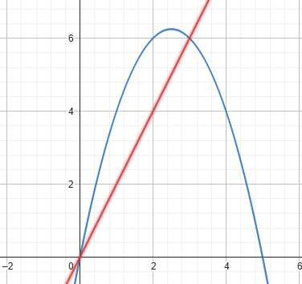

Exercícios
- Calcule as integrais indefinidas usando as substituições dadas.
- Calcule as integrais fazendo a substituição adequada.
- Calcule as integrais
- Determinar a área limitada pelas curvas \( y = 5x – x^2 \) e \(y = 2x \) 
- Achar a área entre as curvas \( y = x^3 \) e \(y = \sqrt{x}\) .
- Calcule as integrais utilizando as substituições trigonométricas adequadas.
(a) \( \int x sen(2x^2) \,dx, \quad u = 2x^2 \)
(b) \( \int 28(7x - 2)^{-5} \,dx, \quad u = 7x - 2 \)
(c) \( \int \frac{9r^2 \, dr}{\sqrt{1 - r^3}}, \quad u = 1 - r^3 \)
(d) \( \int \sqrt{x} \cdot sen^2(x^{3/2} - 1) \,dx, \quad u = x^{3/2} - 1 \)
(e) \( \int \csc^2(2\theta) \cdot cotg(2\theta) \,d\theta \),
i) use \( u = cotg(2\theta) \)
ii) use \( u = \csc(2\theta) \)
(a) \( \int e^{2x} \,dx \)
(b) \( \int x(2 - x^2)^3 \,dx \)
(c) \( \int \cos(8x) \,dx \)
(d) \( \int x^2 e^{-2x^3} \,dx \)
(e) \( \int x^2 \sec^2(x^3) \,dx \)
(f) \( \int \frac{dx}{e^x} \)
(g) \( \int \frac{e^{\sqrt{y}}}{\sqrt{y}} \, dy \)
(h) \( \int sen^2(3x) \cos(3x) \,dx \)
(a) \( \int \sqrt{3 - 2s} \, ds \)
(b) \( \int \theta \sqrt[4]{1 - \theta^2} \, d\theta \)
(c) \( \int \frac{1}{\sqrt{x} (1 + \sqrt{x})^2} \, dx \)
(d) \( \int r^2 \left( \frac{r^3}{18} - 1 \right)^5 \, dr \)
(e) \( \int \frac{4 \, dt}{t(1 + \ln^2 t)} \)
(f) \( \int \frac{sen(2t+1)}{\cos^2(2t+1)} \, dt \)
(a) \( \int \frac{dx}{x^2 \sqrt{4 - x^2}} \)
(b) \( \int \frac{dx}{\sqrt{x^2 - 25}} \)
(c) \( \int \frac{dx}{x^2 \sqrt{16 - x^2}} \)
(d) \( \int \frac{12x^3 \, dx}{\sqrt{2x^2 + 7}} \)
(e) \( \int \frac{x^3}{\sqrt{9 + x^2}} \,dx \)
(f) \( \int x^3 \sqrt{9 - x^2} \,dx \)
(g) \( \int \frac{12x^3 \,dx}{\sqrt{2x^2 + 7}} \)
(h) \( \int \frac{dx}{\sqrt{x^2 + 16}} \)
(i) \( \int \frac{x^5 \,dx}{\sqrt{x^2 + 2}} \)
(j) \( \int \frac{\sqrt{x^2 - 9}}{x^3 - 4} \,dx \)